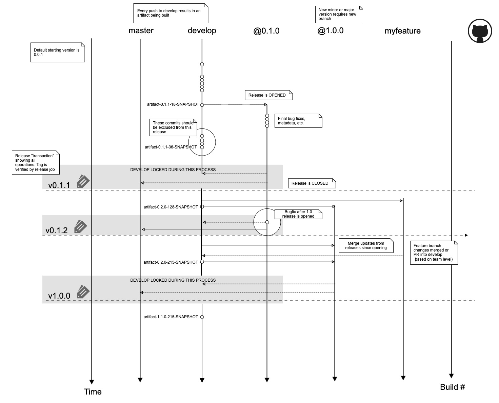

Stainless AI dev-flow¶
This specification describes the continuous integration and delivery pipeline for Stainless AI’s projects. This proposal builds on existing work done at Stainless in this regard. This pipeline is ideal for small teams. The pipeline relies on the following tools/resources:
Jenkins
Semantic Versioning (semver.org)
Git
GitHub
Shared Library http://github.com/stainlessai/jenkins-semci
Goals¶
The pipeline should achieve the following goals:
Automate repetitive build tasks wherever possible.
Enforce versioning standards using tools.
Minimize the number of manual steps taken for any given operation:
Where it makes sense (for non-code repositories like DEV configuration environments, e.g.), a deployment can be automated
by a simple commit to a repository. * To release code, a single Jenkins job should be run * To promote code, a single Jenkins job should be run, etc. * Support different “team levels,” i.e., optimize for a single developer, a small team, and larger teams, by requiring differing levels of enforcement of lockdowns. * Write as little custom logic as possible to support this scheme, relying mostly on existing software, plugins and tools.
Team Levels (work-in-progress)¶
We introduce the concept of “team levels,” or “TL” to indicate levels of enforcement to support different teams in this structure. A TL is a code with an associated set of policy requirements intended to optimize the experience of that team using this framework. For example, if only a single developer is working on a project, using pull requests and locked branches may be more of a hindrance than an advantage (or maybe not, depends) so a project using “TL0” would not have any branch enforcement. Note that a single developer may elect to use TL3 policies, it’s up to them.
On larger teams, the level may change, so each level should be “backward-compatible,” i.e., all levels should share a compatible structure. Branches may change between levels (for example a shared “develop” branch may be introduced on moving to TL3 from TL2).
There are 3 team levels defined:
Team Levels
Team Level |
Description |
|---|---|
TL0 |
A single-developer project |
TL1 |
2-3 developers/collaborators working on a project |
TL2 |
3 or more developers working on a project |
The policy enforcement increases with team level.
TL0: No policy enforcement.¶
No locked branches
All remote branches are read-write
Pull requests are not required for any operation
No required team code reviews
No formal approval workflow
Optional shared develop branch (or single develop - feature structure)
TL1: Small team policies¶
Master is read-only
Developers can push directly to release branches
Pull requests are not required for any operation
TL2: Full team policies¶
Master and release branches are read-only
Release branches are locked prior to release
Any commits that must go into a release branch must be merged by pull request
All commits must be merged into shared develop branch prior to moving to any release branch
All PRs must be approved
Versioning¶
This pipeline uses semantic versioning. Read about it at https://semver.org.
This pipeline uses pre-release semantics based on a -SNAPSHOT build suffix. Note that the word “SNAPSHOT” is arbitrary and this could be “alpha” or “candidate” or “rc” also.
Meta Build Data¶
For tags on the develop or feature branches, we append a build number to the standard semantic versioning scheme as
build meta. So the full build identifier is: $MAJOR.$MINOR.$PATCH(-$BRANCH)-$BUILD_NUMBER-SNAPSHOT where BUILD_NUMBER
is an increasing number, probably the Jenkins build number, although this is not strictly the required source of the number.
The BUILD_NUMBER is the only field that can be automatically bumped by Jenkins.
The $BRANCH field is only present on feature branches and the develop branch.
Git Repository Structure¶
This pipeline is based on the Gitflow structure.
To summarize, projects are structured as follows:
The master branch contains the latest published release (HEAD points to the latest version of the latest deployed release). Humans shouldn’t do anything on the master branch, only bots.
The develop branch contains the latest stable build that will become a future release.
Artifacts published from develop have a -SNAPSHOT build meta tag.
The release branches contains all commits that are being staged for a particular release, and patch versions of the release tree moving forward.
The hotfix branch contains emergency release commits that must be merged to master in-between regular releases.
Specific features are developed in specific feature branches. Any artifacts deployed directly from feature branches
must contain the branch name meta, e.g., myproject-0.2.5-myfeaturebranchname-$BUILD_NUMBER-SNAPSHOT.ext
Why develop and release branches?
There may be commits on develop that you want to deploy 2 patch releases out, or that haven’t been tested or committed in error. The release branch is a staging area where commits that are certain to be deployed go prior to the release artifact being produced.
{kind=link}
Branch and Tag Names¶
The following branch names are reserved:
master
develop
v(version) ← release branch
hotfixes
Any other valid branch name can be used to describe a feature branch.
Tags must follow the format:
$PREFIX@$SEMVER
Where $PREFIX is a valid (acceptable by Jenkins, build process and source repository) prefix string followed by the at sign “@” (omitted if no prefix is supplied), followed by the semantic version string.
For example, for a single-project repo, valid tags are of the form:
0.1.2
v0.1.2
and if multiple projects exist in a single repo, tags may exist of the form:
project1@0.2.5-00-SNAPSHOT
project1@0.2.5-myfeaturebranch-00-SNAPSHOT
project2@0.1.1
Development Stories¶
The following stories outline developer interaction with the process and describe the tasks that should be performed for each story. Actual implementation details are provided in a subsequent section.
Creating an New Project¶
A “project” as defined here is anything that maintains its own version history. It could live in its own repository or
in a subdirectory of another repository. When creating a new project, the starting semantic version of the project is
0.0.1. If no tags or other versioning data is present, this default should be enforced by the build system.
The initial branches are master, develop. An initial release can also be created at this time called v0.0.1.
Pushing Code¶
Any push to develop should result in a SNAPSHOT artifact being created and pushed to the artifact repository.
The artifact will have the version $MAJOR.$LAST_MINOR+1.0, the build number and the SNAPSHOT suffix,
e.g., the first snapshot from the repository will be 0.1.0-1-SNAPSHOT.
Creating a new Release¶
Releasing a version requires applying a tag to the repository commit that represents the revision you want to release. In order for the release artifact to be built, the build system should enforce that the tagged commit is on the master branch. If the tagged commit is not on master, the release version may be reserved but not released. It’s the developer’s responsibility to appropriately version the release. IOW, if it’s a breaking change, don’t make it a patch release, etc.
MAJOR and MINOR Releases¶
The develop branch should automatically build a SNAPSHOT release having version $MAJOR.$LAST_MINOR+1.0-SNAPSHOT. All
release branches must end with .0, e.g., v1.0.0 or v1.1.0. Patch release versions should be
computed from the tags in the repository. To bump MAJOR or MINOR, apply the appropriate tag to the commit that
contains the desired release revision.
PATCH Releases¶
To bump patch, apply the appropriate tag to the commit that contains the desired release version. There should be a
release branch labeled vMAJOR.MINOR.0 that tracks only the commits relevant to that MAJOR/MINOR revision.
Working with Feature Branches¶
It’s a good practice to develop specific features on dedicated branches. Depending on team level, pull requests may
be required or a simple merge into develop may be sufficient. All features branches should flow
featurebranch → develop → release
Hotfixing Releases¶
Hotfixes are branched off of master, commits are added and then the commits are merged and released as per usual.
Build Process Implementation¶
Each project may implement a build toolchain of its choice. These notes describe a setup based on
Jenkins as the centralized, coordinating build system
Multibranch pipeline projects for automating artifact builds
GitHub webhooks for notifications
GitHub branches and tags for recording version history information. Jenkins will use the naming conventions described
herein to calculate version labels.
Each project should have an embedded Jenkinsfile (some repositories may have more than one) that contains the build
pipeline for that project (or subproject). Jenkins must be able to run the project’s toolchain in the build environment.
No developer git commits to master¶
Ideally, the master branch should be locked down so that only a bot account can write to it. You’ll have to manually kick off any merges for these operations from Jenkins, where stainlessbot will be allowed to make the changes. All releases should come from the release branch only, developers will have to push commits there and then promote the release commit in a build job.
Jenkins is used to automate artifact creation. Jenkins will scan for, or be notified of, events that occur during the development cycle and take appropriate action. These events are detailed below.
Git commit to develop (including merges)¶
During regular development, developers will write code and commit to the develop branch, or a feature branch which is merged into develop. For each commit pushed, Jenkins will run the build as defined in each project’s Jenkinsfile(s). The build process for each project will determine if the build is up-to-date. If the build is up-to-date, the commit didn’t contain anything material to the change of the software deliverable (e.g., maybe a doc update or .gitignore file update, etc).
If the build changed, the build should produce a new artifact and automatically increment the BUILD_NUMBER of the artifact based on the last valid tag in the repository, then deploy that artifact to the configured repository, and tag the commit in GitHub with the new version.
Project Requirements¶
Projects must adhere to certain requirements in order to support this build process.
Project build scripts should accept version information from Jenkins. The close release job will set the following environment:
VERSION_MAJOR, VERSION_MINOR, VERSION_PATCH, VERSION_PRERELEASE, BUILD_NUMBER
Tag Annotations¶
The annotation will serve as a record of all the changes that are going into a release. The text of the file should be human readable and should be written in laypeople’s terms. An average user of the app should be able to understand 90% of the changelog (occasionally a bug fix or code change will require jargon). Previous examples of this file can be found under the releases section of the GitHub repo.
Example Annotation
aws-cfn-configuration v1.7.0
- Add new "Foo" API
- Add new "Bar" section to left of Calendar
- Add new "Bar List" panel
- Add new "Bar" popup
- Redesign "Status" screen
- Minor changes and bugfixes:
- Change type of number property in Event API
- Correct typo in Logger GET API
- Fix bug that prevented Settings screen from loading
- Issues: HS-3 HS-23 HS-345 HS-555
HS-434 HS-445 HS-554 HS-123
References¶
https://guides.github.com/introduction/flow/
https://nvie.com/posts/a-successful-git-branching-model
https://dev-cafe.github.io/branching-model/
https://jenkins.io/blog/2018/05/16/pipelines-with-git-tags/
https://stackoverflow.com/questions/49448029/multiple-jenkinsfile-in-one-repository
https://itnext.io/using-git-hooks-to-enforce-branch-naming-policy-ffd81fa01e5e